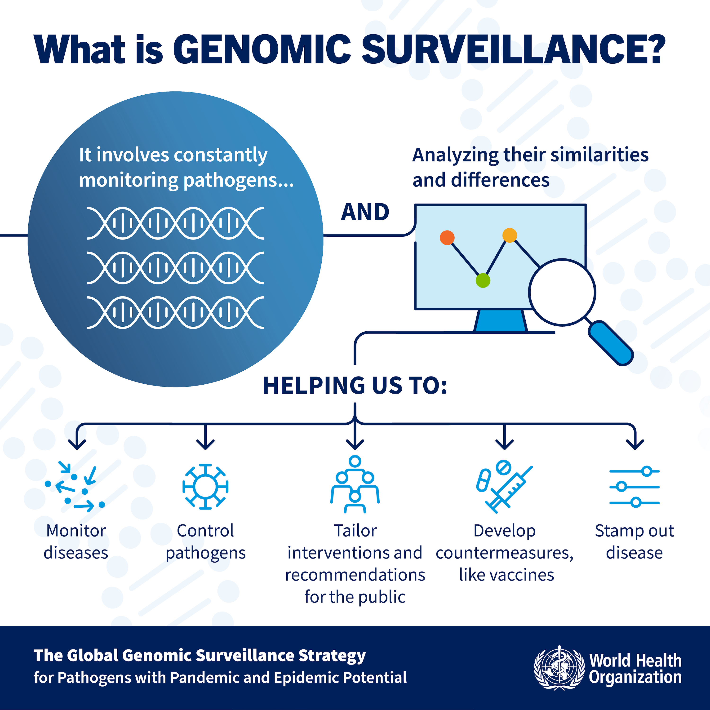
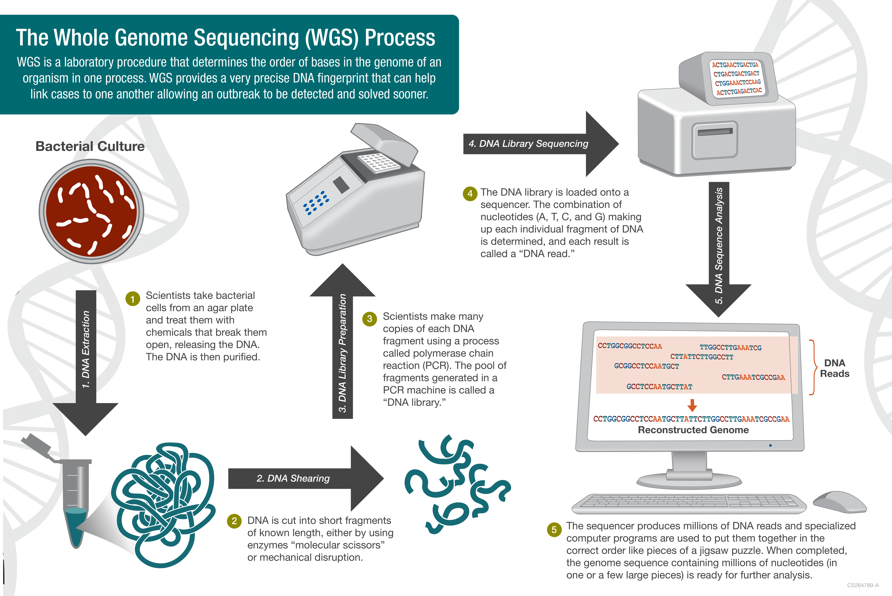

Pathogen genomic surveillances
After this section you should be able to:
- Recognise the role of genomic surveillance in pathogen surveillance.
- Summarise the main methods and steps involved in genomic sequencing analysis.
- Describe the etiology of acute watery diarrhoea (AWD) and how it relates to the Vibrio cholerae bacterium.
- Outline the main features of the Vibrio cholerae genome and its strains.
- List the key questions addressed by pathogen genomic surveilance.
Genomics helps track infectious diseases by sequencing the genomes of bacteria, parasites, and viruses. According to the World Health Organisation (WHO), genomic surveillance involves continuously monitoring pathogens and analyzing their genetic similarities and differences. The WHO has developed a 10-year global strategy for genomic surveillance of potentially pandemic and epidemic pathogens, which you can access here.
Genomic surveillance aims to offer insights into pathogen evolution and understand genetic changes that may affect transmission or resistance to interventions.

Genomic sequencing for pathogen surveillance
In genomic surveillance, one crucial technique is genome sequencing. It involves examining the DNA (or RNA) of pathogens to understand their spread in communities, their role in illnesses, and their development of resistance to medications and vaccines.
Within pathogen genomic surveillance, a key method is whole genome sequencing (WGS). Here, the aim is to reveal the complete order of the bases in the pathogen’s genome. Today, WGS has become the standard approach for quickly detecting and investigating outbreaks. Public health labs primarily use it to promptly identify outbreak sources and assess antimicrobial resistance.
Broadly speaking, genome sequencing involves DNA extraction, library preparation, sequencing and bioinformatic analysis. Typically, WGS produces millions of DNA fragments, termed sequence reads, using sequencing technologies such as Illumina, Oxford Nanopore, or PacBio.

Following WGS, the subsequent step involves bioinformatic and downstream analysis, encompassing:
- Checking and filtering sequence read quality
- Genome assembly
- Evaluating genome assembly quality
- Identifying strain types and their resistance to antimicrobial agents.
Detailed discussions of these analytical steps are presented in the following sections.
Acute Watery Diarrhoea (AWD)
Acute Watery Diarrhea (AWD) is a rapid-onset gastrointestinal condition characterized by frequent and loose, watery stools. It typically lasts for a short duration and is often caused by bacterial, viral, or parasitic infections, leading to dehydration if left untreated. Cholera, a specific type of AWD, is primarily caused by the bacterium Vibrio cholerae. It can manifest as severe diarrhea and vomiting and can swiftly lead to dehydration and electrolyte imbalances. Cholera outbreaks are of particular concern due to their potential to spread rapidly, especially in areas with limited access to clean water and sanitation facilities. Effective treatment involves rehydration therapy and, in severe cases, antibiotics. Controlling cholera outbreaks often requires a combination of public health measures, including improved hygiene and sanitation practices, as well as vaccination campaigns in some instances.
The ability to detect if a spike in AWD cases is caused by a pathogenic strain of Vibrio cholerae is therefore critical for public health action. Genomic surveillance can help in addressing if the patient infected with a pathogenic strain of Vibrio cholerae and whether it is resistant to antimicrobial agents.
Vibrio cholerae
Vibrio cholerae is a gram-negative bacterium primarily found in water, making it highly susceptible to waterborne transmission, particularly through contaminated water sources and food. This bacterium exhibits notable genomic plasticity, characterized by the acquisition of various genetic elements that contribute to its pathogenicity. The history of V. cholerae’s evolution involves the integration of these elements, resulting in the emergence of different pathogenic strains (Figure 3).
Strains of V. cholerae are typically classified through serotyping. The most prevalent serogroup, O1, includes many pathogenic strains. Further subdivisions occur based on serotypes, determined by the methylation status of the terminal lipopolysaccharide in the O-antigen. Additionally, V. cholerae is categorized into biotypes, with El Tor 7PET strains being one example.
V. cholerae has been associated with several pandemic outbreaks, each featuring distinct prevalent strains that evolved through the acquisition of diverse genetic components. Notably, this evolutionary process often involves the incorporation of genetic elements such as the Vibrio pathogenicity island-1 and cholera toxin phage (CTX). There are multiple versions of this phage, with the current one being the El Tor phage. In summary, V. cholerae possesses a dynamic genome shaped by the acquisition of new genetic elements through horizontal gene transfer mechanisms like conjugation and phage infection, which has implications for understanding antimicrobial resistance (AMR).

In addition to serotyping, extensive genomic analysis of numerous Vibrio genomes offers a more refined approach to clustering strains into lineages, enhancing our comprehension of the origins of local outbreaks and transmission pathways. These comprehensive genomic investigations unveil the species’ remarkable diversity, with local strains frequently harboring distinct variants of the cholera toxin and displaying specific transmission dynamics (Weill et al. 2017, Weill et al. 2019, Domman et al. 2017).
The Vibrio cholerae genome consists of two chromosomes, for a total of aproximately 4 Mb (million basepairs) (Figure 4). Besides encoding various genes responsible for the bacterium’s structure and metabolism, its genome may also contain additional elements such as plasmids, phages, and pathogenicity islands that contribute to its ability to cause disease.

For an excellent overview of cholera global epidemiology and the role of genomics in this area, we recommend the following lecture by Prof. Nick Thomson:
Key genomic surveillance questions
During genomic surveillance of outbreaks, especially when investigating cases of acute watery diarrhoea (AWD), several critical public health questions arise:
- Can Vibrio cholerae be detected in the collected and sequenced samples?
- If so, is it a recognized pathogenic strain or an unknown variant?
- If it’s a known strain, then is it likely to be resistant to any antibiotics?
- If resistance is suspected, then which resistance genes have been detected and which antibiotics are predicted to be affected?
Consequently, one of the primary goals of these materials is to understand how genomic sequencing can be applied to reconstruct the genome of Vibrio cholerae samples collected from patients exhibiting cholera symptoms, including AWD, to address these questions.
Summary
- Genomic surveillance is a crucial tool in tracking and monitoring the spread of pathogens. It helps identify disease outbreaks, track transmission routes, and understand the genetic diversity of pathogens.
- Genomic sequencing involves determining the complete genetic code of an organism. Steps include DNA extraction, library preparation, sequencing, and bioinformatics analysis.
- AWD is characterized by sudden-onset diarrhea and is often caused by infections. Vibrio cholerae is a bacterium responsible for cholera, a severe form of AWD.
- The Vibrio cholerae genome is composed of two circular chromosomes. It encodes various genes related to structure, metabolism, and pathogenicity.
- Different strains of Vibrio cholerea may carry variations in virulence and antibiotic resistance genes.
- Pathogen genomic surveillance aims to answer questions like the presence of pathogens, strain identification, antibiotic resistance, and transmission dynamics during outbreaks.